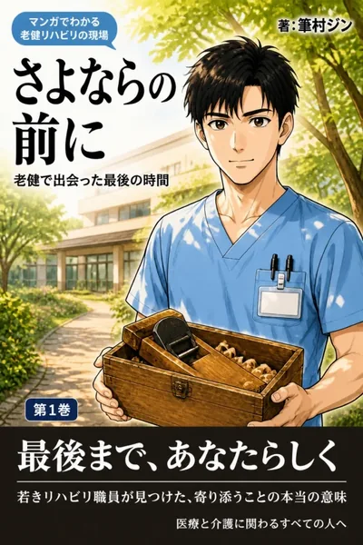
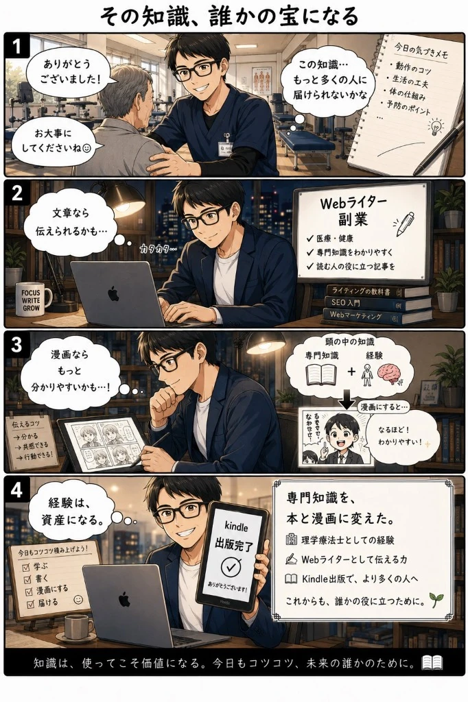
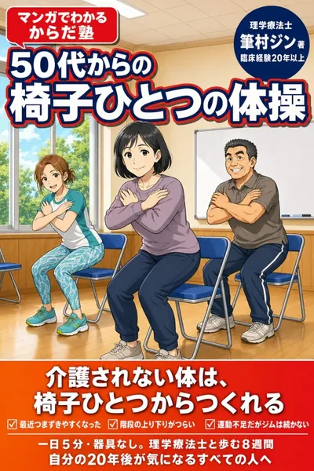
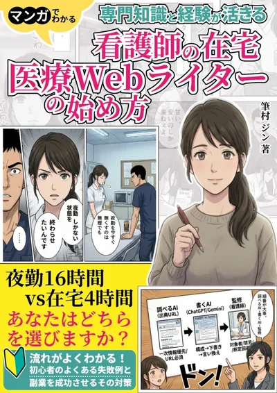

4コマで読む、
筆村ジンのこれまで
「知識は、使ってこそ価値になる。今日もコツコツ、未来の誰かのために。」
リハビリ室で患者さんに伝えていたことを、もっと多くの人に届けたい。文章を書くところから始めて、マンガにし、本にしてきた道のりを4コマにしてもらいました。
制作：たまさん（@tama_ai_2024）の「4コマ漫画100本ノック」企画より介護とリハビリ、からだ、心と暮らし、働き方。4つのテーマで6冊を書いています。
介護老人保健施設で、ご本人とご家族は何を選び、どう暮らしに戻っていくのか。理学療法士の目線で描いた、医療・介護のヒューマンドラマです。
理学療法士の現場経験20年以上から生まれた、いつまでも動ける身体をつくる健康実用書シリーズです。

膝や腰のセルフケア、歩行の安定、日常の姿勢など、年齢を重ねても快適に動ける身体づくりをテーマに、シリーズを順次お届けします。新刊の発売日やセール情報は、Xでいち早くお知らせしています。
Xで新刊情報を受け取る夜勤や臨床現場の経験を、場所に縛られない新しい仕事へつなげる実践ガイドです。

夜勤や不規則な勤務で身につけた専門知識を、在宅でできるWebライターの仕事にどう生かすか。自分でやってきたことをもとに解説します。
2部門で上位医療・看護の資格・検定2位／ビジネスの意思決定3位2026年2月17日時点・Amazon Kindleストア
ふでむら じん
介護老人保健施設で、高齢者のリハビリを担当している理学療法士です。医療の現場で長時間労働や将来の不安を見てきたことから、2021年に副業でWebライター・ディレクターを始めました。
2026年からはKindle作家として、老健で見てきたことをマンガにしています。

「知識は、使ってこそ価値になる。今日もコツコツ、未来の誰かのために。」
リハビリ室で患者さんに伝えていたことを、もっと多くの人に届けたい。文章を書くところから始めて、マンガにし、本にしてきた道のりを4コマにしてもらいました。
制作：たまさん（@tama_ai_2024）の「4コマ漫画100本ノック」企画よりリハビリ・介護・高齢者の健康について、読む人に伝わる形にするお手伝いをしています。
介護保険の申請、手すりや段差の工事、寝る場所の変更。文章で並べると読み飛ばされがちな話も、ご本人とご家族、専門職の会話にすると、自分のこととして読んでもらえます。
老健で20年以上見てきた場面をもとに、記事・監修・マンガ制作をお引き受けしています。
リハビリ・介護・高齢者の健康を中心に、Webメディアやオウンドメディアのコラムや記事を書きます。
理学療法士として、リハビリ・運動・介護の記事の内容を確認し、根拠と表現をチェックします。
むずかしい内容を、マンガや図解にします。施設や企業のご案内、啓発用のコンテンツもご相談ください。
フォームの入力は3分ほどです。内容を確認して、ご入力のメールアドレスにお返事します。